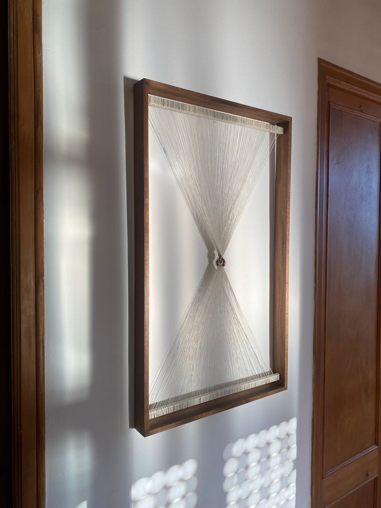

Linked by love, 2022
Oak frame, peace silk thread, silver, gold, love, time.
This work is a collaboration with Amélie Riech of Uncommon Matters, representing two lovers suspended in midair by a thousand silk strings.

Oak frame, peace silk thread, silver, gold, love, time.
This work is a collaboration with Amélie Riech of Uncommon Matters, representing two lovers suspended in midair by a thousand silk strings.